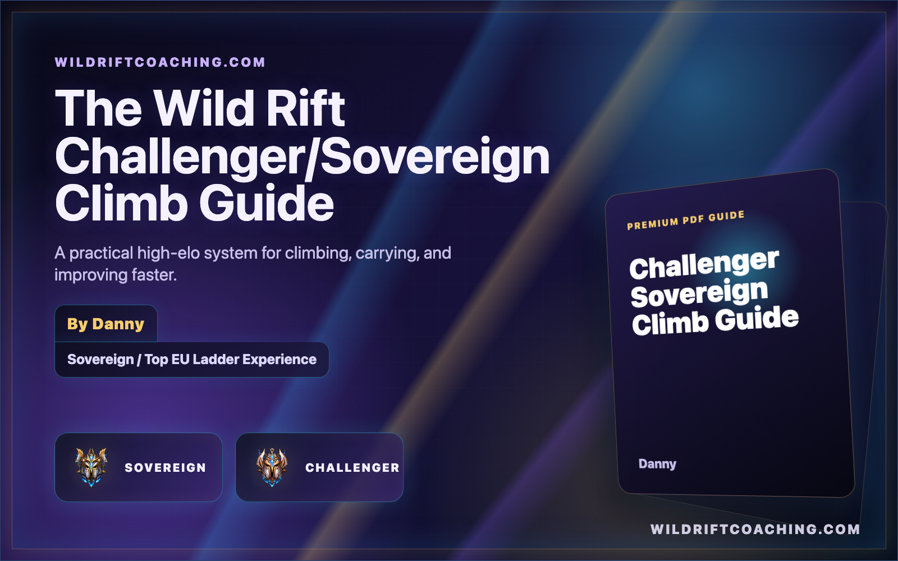

Unsure what your role should do?
Start with your role chapter. Mark the first decision you get wrong repeatedly: a pathing detour, a missed roam window, a risky wave, or a fight you enter too early.
Danny's 50+ page PDF helps you turn replay mistakes into practice goals. It covers macro, wave management, objective setup, and ranked routines for all five roles.

Start with your role, use a worksheet to spot one habit in your replays, and work on it with a 7-day or 30-day practice plan.
Imagine you die walking into an unwarded river before an objective. Pause the replay before you enter.
The PDF has role chapters, replay worksheets, and 7-day and 30-day plans.
Start with your role chapter. Mark the first decision you get wrong repeatedly: a pathing detour, a missed roam window, a risky wave, or a fight you enter too early.
Start with macro and objective setup. In your next replay, pause at the wave or recall that kept you from arriving with your team.
Use a replay worksheet to track one decision. Start with the 7-day plan for that habit, or use the 30-day plan for a longer training block.
For help with one decision, start with a free article. The paid PDF brings role advice, replay worksheets, and practice plans together so you can use them between ranked sessions.
The guide is best when you want a system to study between ranked sessions. A VOD review is better when you want Danny to find the biggest pattern in one replay. Coaching is best when you want live feedback and a plan built around your rank, role, champion pool, and goals.
Best for players who want role chapters and worksheets they can work through on their own.
Buy on PayhipBest when you know something is wrong in your games but cannot see the repeated mistake clearly.
See VOD reviewBest when you want Danny to apply the ideas directly to your games and build a clear improvement path.
See coachingNo. The guide includes starting points for lower ranks as well as Master and above. Choose the fundamentals and role chapters that match your current mistakes. Challenger/Sovereign is the guide's title, not an entry requirement or a promised result.
The guide covers role fundamentals, macro, wave management, objective setup, vision, teamfight decisions, replay review, ranked routines, and worksheets for players who want a clearer climb system.
The PDF guide gives a structured system you can study on your own. Coaching is more personal because Danny applies those ideas directly to your replay, role, champion pool, and rank.
Yes. The replay review sections pair well with a Wild Rift VOD review because they help you mark deaths, objective setup, recall timing, wave states, and repeated macro mistakes.
The guide costs €9.99 on Payhip. It is a digital PDF download, not a coaching session or a printed book.
Start with one role and one replay. Choose a decision to practice, then use the worksheets to see whether it changes in your next games.